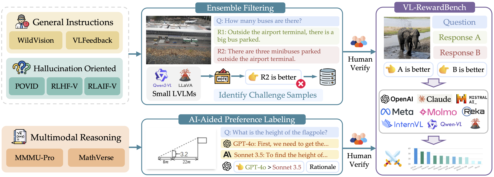
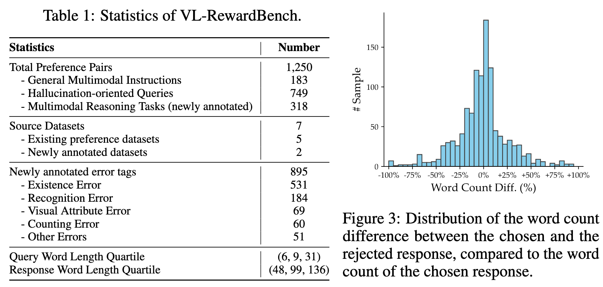

Ideally, an effective benchmark for VL-GenRMs should satisfy three key requirements:
a) diverse coverage of real-world applications;
b) sufficient difficulty to expose current models' limitations;
c) objective ground truth labels.
To satisfy criterion (a), our benchmark evaluates VL-GenRMs across three key application domains:
1.
General multimodal queries from real users (VLFeedback and WildVision)
2.
Visual hallucination detection tasks (POVID, RLAIF-V, RLHF-V)
3.
Multimodal knowledge and mathematical reasoning (MMMU-Pro and MathVerse)
To ensure criterion (b), we employ targeted curation strategies:
- For source datasets with preference pairs, we employ small LVLMs collaboratively to filter out challenging samples, which our evaluation shows remain difficult even for much larger models.
- For reasoning tasks without annotated labels, we leverage strong commercial models to generate responses with explicit reasoning paths, followed by GPT-4's quality assessment.

VL-RewardBench Statistics
